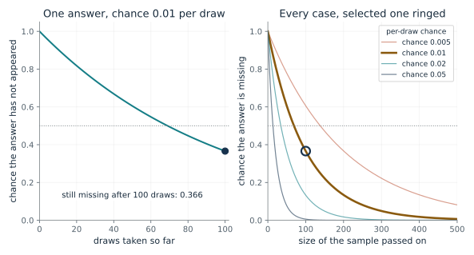
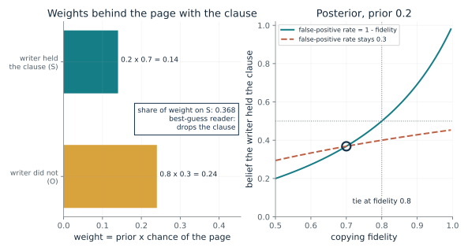
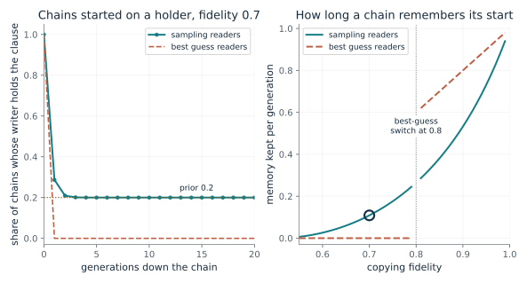
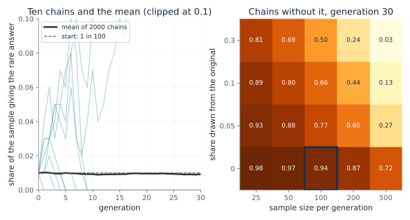
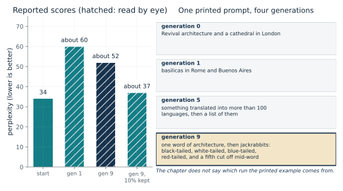
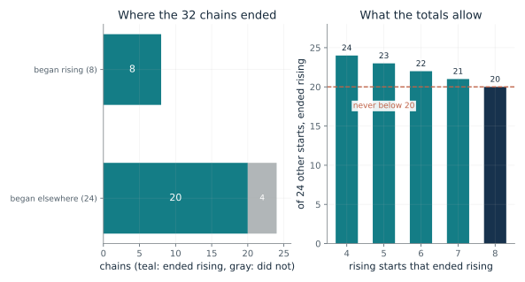

Ask how large each sample is, how rare the detail is, and whether each step sees only the last step's output or can return to the original. Use the missing-answer formula for one step. Use the reader comparison to ask whether the step keeps the likeliest version or samples in proportion to the weights. Report the chance of loss, say that the sample-only copier cannot get the detail back, and name what restores it: links back to the original.
“I summarize interviews with a model, then summarize the summary. A qualification shows up in about 1 passage in 100, and each step keeps a 100-passage sample. How likely is it to be gone after one step, and what would help?”
Use mmi-ch24-learning-across-generations with the companion's AI skill package. The illustrations below also work on their own.
How likely is a rare answer to vanish in one handoff?
From Chapter 24, A small model fed its own text ended up writing about jackrabbits
A rare answer has a 1 in 100 chance on each draw, and the next learner trains on 100 draws. How likely is the answer to be missing from the sample?
Each draw misses the answer with the leftover chance 1 - p. Missing it every time multiplies that leftover chance by itself, once per draw. With more draws the product falls, but slowly when p is small, so rare answers need large samples to survive.
Predict first: Before moving the sliders, predict how many draws are needed before a 1 in 100 answer has even odds of having appeared at all.

Chance of the rare answer on one draw: 0.01 · Draws in the sample: 100
What happens: A 1 in 100 answer is missing from a 100-item sample 37 percent of the time. It takes 69 draws just to reach even odds of seeing it once, which is why a sample the size of the reciprocal of p is not enough.
An answer with chance 0.01 per draw is missing from all 100 draws 36.6 percent of the time. If the next learner can produce only what its sample contains, a missing answer is gone from that learner.
- Chance it never appears
- 0.366
- Chance it appears at least once
- 0.634
- Expected appearances in the sample
- 1
- Draws for even odds of seeing it
- 69
Whenever a copy is made from a sample of a copy, rare details are the first to go, and the formula says how fast. Where outside material is not brought back, the loss is permanent for a plain copier.
Bartlett's readers rebuilt a tale rather than copying it, so this formula is not an account of what they did.
For a model retrained on its own samples, the formula is the chapter's illustration of why rare content can go first. The paper did not count rare answers in OPT-125m.
Show the calculation
P(missing) = (1 - 0.01)^100 = 0.99^100 = 0.366. Even odds of seeing it need 69 draws.
The equations and symbols
- p
- chance of the rare answer on one draw, between zero and one
- n
- number of draws in the sample passed on
- 1 - p
- chance of missing the answer on one draw
Draws are independent. The next learner is a plain copier that can produce only answers present in its sample; a more general model might keep earlier knowledge or generalize to an unseen answer.
Check your understanding: With p = 0.02 and a sample of 50, how likely is the answer to be missing, and is the sample comfortably safe?
Book source: Chapter 24, A small model fed its own text ended up writing about jackrabbits. Illustration C24-D01. Formula. Book formula and constructed example (the chapter's 1 in 100 answer and 100 samples, recomputed exactly). The other values of p and n are this companion's variations. No simulation or data is used here.
Why does a page carrying the clause favor no clause?
From Chapter 24, One odd clause, and two kinds of reader
A reader sees a page with the odd clause. Before reading, the clause was 0.2 likely to be held. Writers copy a held clause 7 times in 10 and add an absent one 3 times in 10. What does the reader believe?
Each story gets a weight: its prior times the chance it produces this page. The share of the total on the clause is the posterior. A best-guess reader adopts whichever story weighs more. A sampling reader adopts the clause with a chance equal to its share of the total weight.
Predict first: Predict whether a reader who sees the clause on the page should believe the writer held it. Then predict how much higher the fidelity must be for a best-guess reader to keep it.

Prior that the writer held the clause: 0.2 · Copying fidelity: 0.7
What happens: The weights are 0.14 for held and 0.24 for not held, so the page favors no clause even though it carries the clause. The share on the clause is 0.14 out of 0.38, about 0.37: a best-guess reader drops it, a sampling reader adopts it about 4 times in 10. With a prior of 0.2 the tie falls at fidelity 0.8.
With prior 0.2 and fidelity 0.7 the page favors O (weights 0.14 and 0.24). A sampling reader adopts the clause about 3.7 times in 10.
- Weight if held (S)
- 0.14
- Weight if not (O)
- 0.24
- Share of weight on S (posterior)
- 0.368
- Best-guess reader
- drops the clause
A minority detail that is common enough to keep turning up on pages can still be dropped every time by a reader who always takes the likeliest version. That is how a chain can erase a detail that keeps arriving.
The chapter gives no measurement of how people weigh a clause. Bartlett's account was convention, not arithmetic, and nothing here was fitted to his readers.
Beam search resembles a best-guess reader in preferring likely output. The collapse study used beam search to write each generation's data, so decoding and refitting are tangled and the study cannot say which did the damage.
Show the calculation
Weight S = 0.2 x 0.7 = 0.14. Weight O = 0.8 x 0.3 = 0.24. Posterior = 0.14 / (0.14 + 0.24) = 0.368. With false positives 1 - fidelity, a tie falls at fidelity 1 - prior = 0.8.
The equations and symbols
- S, O
- the writer held the clause (S) or did not (O)
- d
- the observed page, which carries the clause
- P(S)
- the prior, the belief before reading
- P(d | S)
- copying fidelity: the chance a holder puts the clause on the page
- P(d | O)
- the false-positive rate: the chance a non-holder adds it (here 1 minus fidelity)
Two explanations, S and O, that cover the possibilities. The false-positive rate equals one minus the fidelity unless the dashed curve is read, where it stays at 0.3. The reader weighs the two stories and cannot ask the writer.
Check your understanding: With prior 0.3 and fidelity 0.7 (false positives 0.3), what is the posterior, and what does a best-guess reader do?
Book source: Chapter 24, One odd clause, and two kinds of reader. Illustration C24-D02. Formula. Book formula and constructed example. The numbers (prior 0.2, fidelity 0.7, false positives 0.3) are the chapter's own arithmetic, chosen for the arithmetic and fitted to nobody. The other priors and fidelities are this companion's variations.
Where does a chain of readers end up?
From Chapter 24, Nine students, a slider, and where a chain ends up
If every writer sees a page from the writer before and rebuilds a belief, does the clause persist down the chain, and does it matter whether readers take the likeliest version or sample?
Each generation has a chance of staying on the clause if the writer held it and a chance of adding it if not. The difference between those two chances is the memory kept per generation. When it is near 1, the chain barely moves. When it is near 0, the chain forgets in a step.
Predict first: Predict what the sampling chain settles on, and whether raising the fidelity toward 1 makes it settle faster or slower.

Copying fidelity: 0.7 · Kind of reader: sampling
What happens: At fidelity 0.99 a sampling chain still holds the clause in about 63 percent of chains after 10 generations, and it takes more than 30 generations to get near the prior, 0.2. Near-exact copying remembers its start for a long time. At fidelity 1 it would never forget.
At fidelity 0.7 a chain of sampling readers drifts to the prior, 0.2, whatever it started on. The higher the fidelity, the slower it forgets (memory 0.109 per generation).
- After 1 generation
- 0.287
- After 10 generations
- 0.2
- Long-run share
- 0.2
- Memory kept per generation
- 0.109
Near-exact copying preserves an early mistake as well as an early insight, and a likeliest-version rule can wipe out a minority view. A real pipeline that rewrites and samples ends where its steps together send it.
The student chains were consistent with a pull toward a rising line. Nothing shows the students sampled their beliefs, and the task was bars and sliders, not a story.
The settling result is exact only for idealized learners like these. Nothing shows that near-exact distillation keeps a teacher's first mistakes.
Show the calculation
Next writer holds the clause with chance 0.287 if this one does, and 0.178 if not. Memory = 0.287 - 0.178 = 0.109.
The equations and symbols
- S_t
- whether the writer at step t holds the clause
- reader(d)
- chance the next writer adopts the clause after page d: the posterior (sampling) or 1 or 0 (best guess)
- lambda_2
- the second eigenvalue: how much of the starting difference survives each generation
- prior
- 0.2, the shared prior of every learner
Two hypotheses, every learner with the same prior and a correct guess about how pages are made, one page per step, and an exactly computed chain with no sampling noise. The best-guess tie rule is a coin flip. Exact settling at the prior holds only under these conditions; a real pipeline that reads, rewrites and samples ends where all three steps together send it.
Check your understanding: At fidelity 0.7, how many generations does a best-guess chain keep the clause, and where does a sampling chain end?
Book source: Chapter 24, Nine students, a slider, and where a chain ends up. Illustration C24-D03. Model. Model built on the chapter's two-state ghost-clause example (prior 0.2, false positives equal to one minus fidelity). The settling of sampling chains at the prior is Griffiths and Kalish's result, stated in the chapter under conditions. The best-guess figures are this companion's arithmetic on the chapter's example, not a result from either paper.
Does a chain of copiers lose a rare answer, and can the original bring it back?
From Chapter 24, What keeps a story alive, and what keeps a model whole
A rare answer starts at 1 in 100. Each copier trains on a sample of the one before. How many chains lose it entirely, and what changes if part of each sample comes from the original?
Each generation draws n items, each from the original source with chance r and otherwise from the last generation. The count that gives the rare answer becomes the next generation's share. If the count is zero and r is zero, the answer cannot come back.
Predict first: Predict whether the average share after 30 generations stays near 1 in 100 even though many chains reach zero.

Sample size per generation: 100 · Share of each sample from the original: 0.0
What happens: With samples of 100 and no original data, the answer is missing in about 36 percent of chains after one generation, close to the formula's 0.366, and in about 94 percent by generation 30. A chain that reaches zero stays at zero, while the few that drift up keep the mean near 1 in 100.
With samples of 100 and 0 of each sample taken from the original, the rare answer is missing from 93.8 percent of 2000 seeded chains by generation 30. A chain that hits zero stays there unless the original is drawn on.
- Missing after generation 1 (simulated)
- 0.364
- Missing after generation 1 (formula)
- 0.366
- Missing after generation 30
- 0.938
- Mean share after generation 30
- 0.00921
This is the chapter's practical lesson: a link back to the original lets a reader recover what a copy of a copy has lost. The simulation shows the direction and the size of the effect in a constructed case, nothing more.
Gerstgrasser and colleagues found that piling synthetic data on top of real data avoided collapse in the settings they tested. The simulation here does not reproduce that study.
Show the calculation
Each generation: count ~ Binomial(100, r p0 + (1 - r) x), x = last share, r = 0, p0 = 0.01; next share = count / 100. Generation 1 check: (1 - 0.01)^100 = 0.366.
The equations and symbols
- x_t
- share of generation t's output that gives the rare answer
- n
- sample size passed on
- r
- share of each sample drawn from the original source
- p_0
- the original share, 0.01
A plain copier that reproduces exactly its sample. Draws are independent. The share r stands in for keeping some original data; the paper's 10 percent run also trained for ten epochs against five, so it does not isolate the 10 percent.
Check your understanding: In the settings with no original data, which sample size has the smallest share of chains without the answer at generation 30, and why does the mean not shrink with it?
Book source: Chapter 24, What keeps a story alive, and what keeps a model whole. Illustration C24-D04. Simulation. Seeded simulation built from the chapter's 1 in 100 example: 400 chains of 30 generations per setting, seed 2024. It is this companion's construction, not the model-collapse study (which used OPT-125m and did not count rare answers) and not a measurement. The chapter reports only the one-step miss chance and that a run with some original data degraded less.
What did a model do to its own text, and how bad was the score?
From Chapter 24, What keeps a story alive, and what keeps a model whole
A small model was retrained again and again on text written by the one before. How did its score on real text change, and what changed when some original data was kept?
Perplexity measures how surprised the model is by real text. It started at 34. With no original target examples in fine-tuning, it jumped at generation 1 and settled near 52 by generation 9. With a random 10 percent of the original kept, it ended near 37.
Predict first: Predict whether the score after nine generations is worse than after one, and how close keeping 10 percent of the original gets to the start.

Which score: gen9
What happens: With 10 percent of the original data kept, the score ends near 37, against about 52 without it and 34 at the start. The authors report only minor degradation for this run, but it also trained for ten epochs, so the 10 percent alone is not isolated.
After 9 generations, no original examples kept: perplexity about 52, 1.53 times the start. Only the start (34) is printed in the paper's text; the rest are read by eye, and the 10 percent run also trained for ten epochs against five.
- Perplexity
- about 52
- Source of the number
- read by eye from the paper's figure
- Ratio to the start (companion's arithmetic)
- 1.53
This is the machine chain in the chapter. The printed prompt shows the drift in one case, church towers to jackrabbits, which the chapter says is a sample of the drift and not a rate.
A model trained on a teacher's text can lose rare content and drift toward typical output, which the authors call model collapse. The scores are the evidence here, plus theory.
Show the calculation
Ratio = 52 / 34 = 1.53. The gap between 52 and 37 mixes the 10 percent of original data with a longer training run, so it does not isolate the 10 percent.
The equations and symbols
- perplexity
- how surprised the model is by each next token of real text; lower is better when the test and tokenization are fixed
- 34
- the starting perplexity, given in the paper's text
One small model (OPT-125m), generations 0 to 9 only. The 10 percent run also trained for ten epochs against five. Each generation's data was written with beam search, so decoding and refitting are tangled and the study cannot say which did the damage. The paper did not count rare answers in this model.
Check your understanding: Why can the chapter not say the 10 percent of original data caused the lower score?
Book source: Chapter 24, What keeps a story alive, and what keeps a model whole. Illustration C24-D05. Reported result. Reported values quoted in the chapter from Shumailov and colleagues (Nature, 2024). Only the starting value 34 is printed in the paper's text. The 60, 52 and 37 are read by eye from the paper's figure and are shown as approximate. The ratio is this companion's own arithmetic. The prompt outputs are the paper's one printed example. No simulation is used here.
How many of the 32 chains really moved toward a rising line?
From Chapter 24, Nine students, a slider, and where a chain ends up
28 of 32 chains of students ended on a rising line. Eight chains began on one. How strong is the evidence of a pull toward it?
There were four starting data sets with eight chains each. 28 chains ended on a rising line. Because at most eight of those began there, at least 20 came from the other 24. The unknown is how many of the eight stayed.
Predict first: Predict the smallest number of chains that began elsewhere and still ended on a rising line.

Rising-start chains that ended rising (unreported): 8
What happens: If all eight rising-start chains ended rising, 20 of the 24 chains that began elsewhere did as well, which is the smallest it can be. If some rising-start chains moved away, more of the others ended rising. Either way the pull toward a rising line is real in the counts, though the study did not fit a model.
Twenty-eight of 32 chains ended on a rising line, but eight began on one. If 8 of those eight ended rising, then 20 of the 24 that began elsewhere did. Whatever the split, at least 20 did.
- Ended rising
- 28 of 32
- Rising-start chains ending rising (assumed)
- 8 of 8
- Began elsewhere, ended rising
- 20 of 24
- Other endings
- 3 falling, 1 unsettled
A headline count can hide how much of it was already there at the start. Subtracting the chains that began on the answer shows what is left, and the chapter does exactly that.
A behavioral result in 288 undergraduates at one university. It says what chains of learners did on one task, not how any mind works.
The theory of sampling learners predicts settling at the prior. The students were not shown to sample.
Show the calculation
Began elsewhere and ended rising = 28 - 8 = 20. The smallest it can be is 28 - 8 = 20, so at least 20 of 24.
The equations and symbols
- x
- how many of the eight rising-start chains ended rising (not reported, so it is a control)
- 28
- chains that ended on a rising line, out of 32
- 24
- chains that began on a falling line, a U shape or random pairs
The experimenters read the pull as consistent with students expecting a rising line. They did not fit a model, and they write that significantly more data would be required to confirm the stable distribution predicted by the theory. The task was bars and sliders, not a story.
Check your understanding: If only 5 of the 8 rising-start chains ended rising, how many of the 24 other chains did?
Book source: Chapter 24, Nine students, a slider, and where a chain ends up. Illustration C24-D06. Reported result. Reported counts quoted in the chapter from Kalish, Griffiths and Lewandowsky (2007): 288 undergraduates, 32 chains of nine students, eight chains from each of four starting data sets, 28 of 32 ended rising, 3 ended falling, 1 never settled. The count of how many rising-start chains ended rising is not in the chapter, so it is the control. The bound is arithmetic. No simulation is used.
Mathematical illustrations use the book's formulas with disclosed small examples. Each interactive choice shows a result computed from the same calculations as the chapter notebook. A simulation is not a measurement, and for a brain the mathematics is a model: a picture illustrates a result, and the assumptions determine its scope. Review copy, brain-computer partnership revision of 1 november 2026.